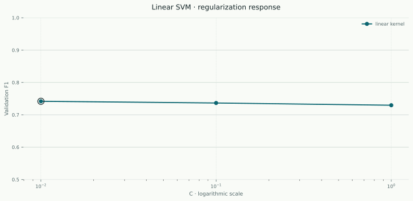
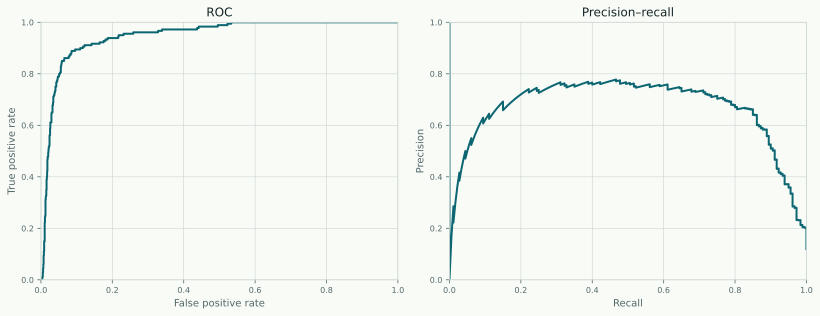
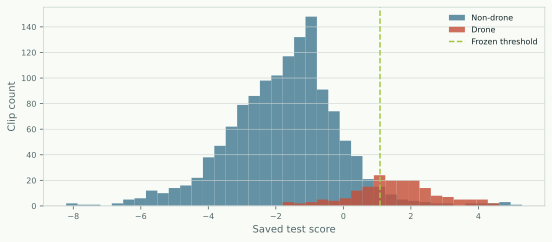

DECISION BEHAVIOR
Move the threshold
This reclassifies only the anonymous saved test scores.
Support vector machine · frozen designated fit · seed 42
Linear kernel, C in {0.01, 0.1, 1, 10, 100}; winner C=0.01.
Validation search · 5 recorded candidates
Chart form follows the recorded search: parameter maps for complete grids, response curves for ordered sweeps, and ranked dot plots when settings vary across several dimensions. The held-out test did not choose these settings.

| Rank | Recorded setting | Mean validation F1 | Seed SD | Seeds |
|---|---|---|---|---|
| 01 | {"kernel":"linear","C":0.01} | 0.7418 | n/a | 1 |
| 02 | {"kernel":"linear","C":0.1} | 0.7366 | n/a | 1 |
| 03 | {"kernel":"linear","C":1} | 0.7297 | n/a | 1 |
| 04 | {"kernel":"linear","C":1} | 0.7297 | n/a | 1 |
| 05 | {"kernel":"linear","C":1} | 0.7297 | n/a | 1 |
Frozen test scores · 1,506 clips
The curve is derived from the saved score vector. The confusion matrix starts at the validation-frozen threshold.

This reclassifies only the anonymous saved test scores.
Blue: non-drone · coral: drone

Matched group comparisons
Intervals crossing zero do not establish a difference or equivalence. Positive values favor this model.
| Compared model | Difference direction | 95% paired CI | Read |
|---|---|---|---|
| Logistic regression | SVM · linear − Logistic regression (reversed pair) | [-0.021, +0.027] | crosses zero |
| SVM · RBF | SVM · linear − SVM · RBF | [-0.300, -0.084] | excludes zero |
Compute and lineage